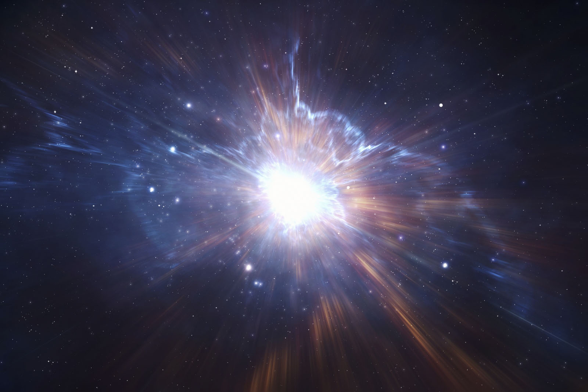
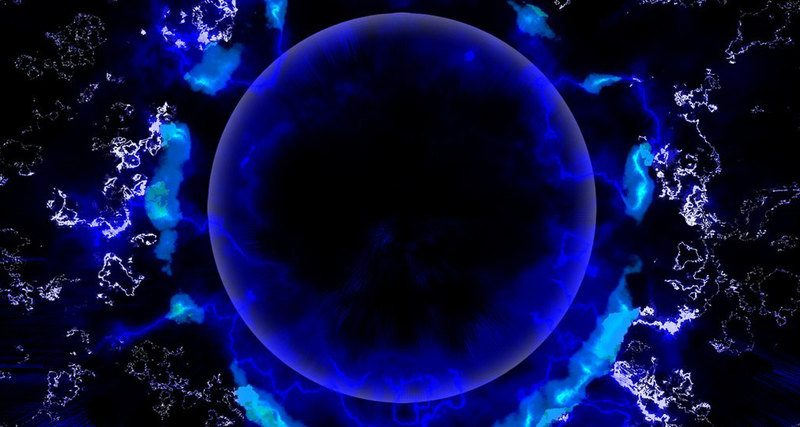

ТАЄМНИЦІ ВСЕСВІТУ
Що було до Великого вибуху?
Всесвіт, як відомо, з'явилася в результаті колосального вибуху, що стався 13,77 мільярдів років тому. Всі речовини, матерія і енергія були стиснуті в точку з нульовими розмірами. Це була неймовірно однорідна ізотропна суміш з нескінченно високою температурою, щільністю і тиском, відома також як космічна сингулярність.
Факт існування сингулярності, а якщо бути більш точним, факт неможливості її уникнення був доведений ще в 1967 році Стівеном Хокінгом. Сингулярний стан Всесвіту органічно вписується або є невід'ємною частиною більшості космологічних теорій, в тому числі і ОТО А. Ейнштейна.
Ось, що у своїй роботі писав С.Хокінг з приводу початкового етапу розвитку Всесвіту:
Результати наших спостережень підтверджують припущення про те, що Всесвіт виник в певний момент часу. Однак сам момент початку творіння, сингулярність, не підкоряється жодному з відомих законів фізики.
Іншими словами, сингулярність - це сама далека видима частина Всесвіту, ми ніяким чином не можемо зазирнути за неї або змоделювати те, що їй віщувало. Тому ми не можемо дізнатися що стало причиною Великого вибуху, чи був Всесвіт до цього моменту і в якому вигляді він існував.
Темна енергія
3/4 Всесвіту - це темна енергія.Але що це таке не може пояснити жоден учений, як втім і вся наука в цілому. Це загадкова сила незрозумілої природи, її не можна побачити, до неї неможливо доторкнутися, не можна відчути якимось іншим способом, однак вона має величезний вплив на весь Всесвіт, змушуючи його розширюватися з постійно зростаючою швидкістю. вплив темної енергії Галактичний кластер SDSS J1004+4112. Лише кілька з цих галактик зіллються воєдино під впливом гравітації, інші будуть розкидані темною енергією по найтемніших закутках Всесвіту. Про існування темної енергії свідчать тільки непрямі фактори: прискорене розширення, невидима маса-енергія Всесвіту. Більш того, дане поняття органічно вписується в переважну більшість космологічних теорій.
Читати даліЗародження життя
Що таке життя? Активна форма існування матерії, яка виникла випадково або найбільш раціональна і від того закономірна форма її існування? Відповідь на це питання людство намагається знайти вже не одну тисячу років. Життя - це, можливо, головна таємниця Всесвіту. Ми знаємо дуже багато про нього, але не знаємо як і з чого воно виникла, чи була це випадковість унікальна у Вселенських масштабах, чи банальна помилка природи, а може бути, поява життя - це закономірний результат розвитку найпростіших органічних речовин під впливом мінливих умов навколишнього середовища ... Про це можна міркувати нескінченно. Можливо частину відповідей ми отримаємо, знайшовши життя за межами Землі, але трапиться це швидше за все не за нашого віку.
Читати далі